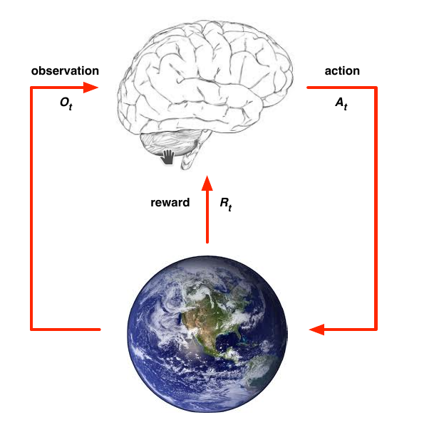
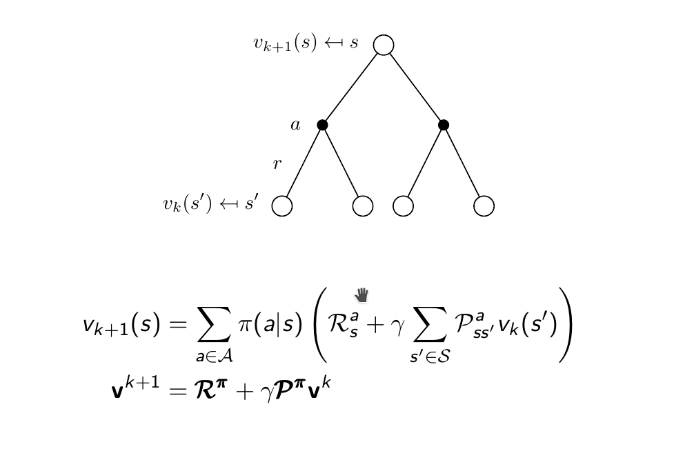
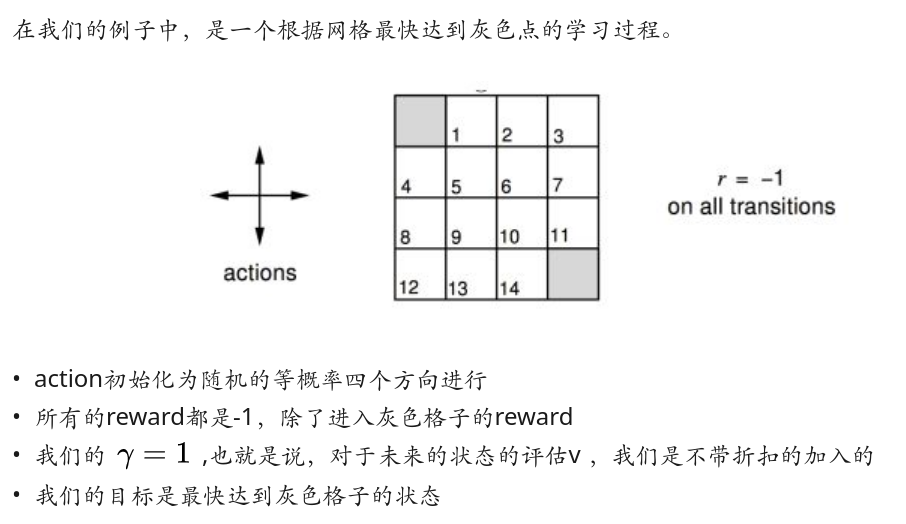
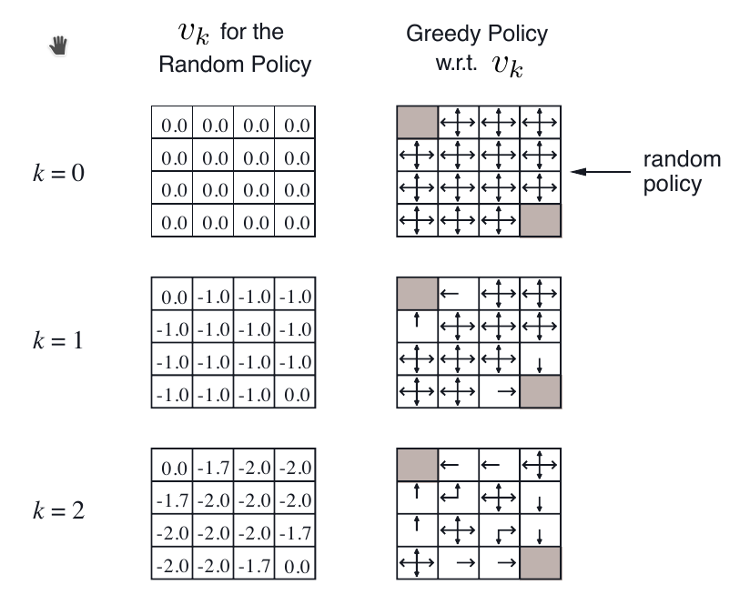

强化学习 – David Silver Course
1 Lession 1
1.1 强化学习和其他机器学习之间的区别是什么？
- 没有监督者，只有反馈信号 reward signal
- 反馈会有延迟，不是立刻就能得到反馈
- 每个样本非独立同分布 每次获取的信息都不是独立同分布的
- action 对之后的结果会有影响
1.2 Reward
- Reward 代表一个反馈的信号，一般用来表示某一时刻的 action 的表现如何
1.3 Goal
- 对于任何的任务，我们的统一目标是：得到 reward 的累积最大值
- 基于上诉的要求，agent 需要计算未来的 reward，而不只是计算当前时间的 reward
- 有时，会为了未来的 reward 最大化 放弃当前的利益
1.4 Agent & Environment

1.5 History
\[ H_t = A_1, O_1, R_1, .... , A_t, O_t, R_t \]
H: History A: Action O: Observation R: Reward(from environment)
推动事件发生的动力取决于History。
- 构建一个History到 Action的映射，Agent根据这个映射选择Action
- Environment返回Agent Observation 和 Rewards
1.6 State
- State 是对 History 的一个总结，用来决定下一个Action 是什么
\[ S_t = f(H_t) \]
- Environment State(\(S_t^e\))，对于agent来说，可能不是可见的，也可能会包含过多无用的信息。
- Agent State(\(S_t^a\))，是把 \(S_t^e\) 经过agent抽象、整理之后的State，是RL用来分析的State。
- State 相对于 Agent 来说最大的好处是他的信息量很少，我们不需要得到所有的 History 来得到下一步的 Action
1.6.1 Markov
如果一个State满足： \[ P[S_{t+1} | S_t] = P[S_{t+1} | S_1, S_2, ... S_t] \] 那么这个状态就是Markov 简单来说，P的下一个阶段的state（\(P_{t+1}\)）只和当前state（\(P_t\)）有关，与之前的状态无关，那就称这个state为Markov
1.7 RL Agent的主要元素
- Policy 决策，agent的行为函数（agent采取什么action取决于这个函数） 输入状态，输出动作或者各个动作的概率
- Value function 评价函数，用来判断当前状态或者行为的好坏
- Model agent对当前环境的表述
1.7.1 Policy
- Deterministic policy：每个状态都有一个对应的确定的决策，从state到 action 的映射 mapping \( a = \pi(s) \)
- Stochastic policy：输入状态，输出某种决策的概率 \(\pi(a|s) = P[A=a | S=s]\)
1.7.2 Value Function
- 对未来return的预测函数
- 评价state的好坏
- 当前状态为 S，假设你有两个选择 A1 和 A2，对应的状态为 S1 和 S2；选择的时候比较 S1 和 S2 状态的累积 reward 的大小
- 评价函数会计算未来一段时间的累积reward值的大小，而不只是当下。但是也不能考虑太远的未来，因为未来是无限长的，而且也没有必要去计算那么长的未来，所有会添加discount因子，即下述的\(\gamma\)
\[ v_{\pi}(s) = E{\pi}[R_t + \gamma R_{t+1} + \gamma ^2R{t+2} + ... | S_t = s] \]
1.8 RL Agent的分类
1.8.1 分类1
- Value based 根据 Value function 计算，其中 Policy 是隐含的，不需要直接定义
- Policy based 根据 State、Action 的映射关系
- Actor Critic(Both)
1.8.2 分类2
- Model Free
- Policy and/or Value Function
- No Model
- Model Based
2 Lession 2
2.1 State Transition Matrix 状态转移矩阵
\(P_{ss^{\prime}}\)表示State从 s 转移到 \(s^{\prime}\)的概率。 \[ P_{ss^{\prime}} = P[S_{t+1} = s^{\prime} | S_t = s] \]
2.2 Markov Reward Process
Markov Reward Process 可以用元祖表示 (S, P, R, \(\gamma\))
- S 有限的State集合
- P 状态转移矩阵（状态之间转移的概率）
- R Reward Function 奖励函数
- \(\gamma\) discount因子
2.2.1 Return
Return（Environment 给 Agent）\(G_t\)是从 t 阶段之后的总的discounted reward之和。 \[ G_t = R_{t+1} + \gamma R_{t+2} + ... = \sum_{k=0}^{\infty}\gamma ^kR_{t+k+1} \]
其中，G 来自一个随机样本，累计了从当前状态的奖励（immediate reward）一直到未来的奖励（delay reward）
2.2.2 Why discount
- 数学的可行性、容易性
- Markov Process 是无限的，不可能无限的考虑到之后所有的reward
- 未来的不确定性，无法完美的表征未来
- 个例
额，我上节课作出的回答不够完善，只想出了第二个原因
2.2.3 Value Function
Value Function 会给出当前状态以及到未来所有状态下的期望 return（\(G_t\)） \[ v(s) = E[G_t | S_t = s] \]
根据 value function 选择 \(G_t\) 最大的那个状态的方向。
2.2.4 Bellman 等式
上诉的value function可以拆分开（动态规划）：
- 立即反馈 \(R_{t+1}\)
- discounted后续的 \(\gamma v(S_{t+1})\)
2.3 Markov Decision Process
Markove Decision Process 可以用元祖表示（S, A, P, R, \(\gamma\)） 和上诉的MRP相比多了：
- A：action的集合
MRP到某个state是通过概率的方式计算，而MDP加入了action，是agent主动选择某个action进入一个state
2.3.1 Policies
Agent的行为完全取决于Policy。 \[ \pi(a|s) = P[A_t = a | S_t = s] \]
2.3.2 Value Function
\(\pi\) ：policy
- state-value function \[ v_{\pi}(s) = E_{\pi}[G_t | S_t = s] \]
- actor-value function \[ q_{\pi}(s, a) = E_{\pi}[G_t | S_t = s, A_t = a] \]
上诉两个value function传入的State有不同的含义。当我们现在在\(S=s_1\)，考虑下一步改执行什么action以及得到什么state时，state-value function传入的state是下一步的状态\(s_2\)；actor-value function传入的state是当前的状态\(s_1\)
2.3.3 Bellman Expectation Equation
v ：当前 state 的 value q ：当前 action 的value
2.3.3.1 State 与 State ，Action 与 Action 之间的转换
\[ v_{\pi}(s) = E_{\pi}[R_{t+1} + \gamma v_{\pi}(S_{t+1}) | S_t = s] \]
\[ q_{\pi}(s, a) = E_{\pi}[R_{t+1} + \gamma q_{\pi}(S_{t+1}, A_{t+1}) | S_t = s, A_t = a] \]
2.3.3.2 相互之间的转换
当前 State 的 \(v_{\pi}\) ，等同于当前 State 选某个 Action 的 Reward（0）+ 后续 （Action 对应的 Value * 当前策略下在 State 选这个 Action 的概率） 之和
\[ v_{\pi}(s) = \sum_{a \in A} \pi(a|s) q_{\pi}(s, a) \]
当前 Action 的 \(v_{\pi}\) ，等同于 执行当前 Action 的 Reward（\(R_s^a\)） + discounted（\(\gamma\)） 后续的（执行这个 Action 到达另一个 State 的概率（\(P^a_{ss^{\prime}}\)） * 这个 State 的 Value）之和
\[ q_{\pi}(s, a) = R_s^a + \gamma \sum_{s^{\prime} \in S} P^a_{ss^{\prime}} v_{\prime}(s^{\prime}) \]
讲两个式子合起来： \[ v_{\pi}(s) = \sum_{a \in A} \pi(a|s) (R_s^a + \gamma \sum_{s^{\prime} \in S} P^a_{ss^{\prime}} v_{\pi}(s^{\prime})) \]
理解这些式子要抓住：当前状态的预测 reward value：当前的 reward value 和之后的 reward value 之和
2.3.4 Optimal Policy
\[ \pi > \pi^{\prime} \text{ if } v_{\pi}(s) > v_{\pi^{\prime}}(s) \]
- 任意性 一个 policy 比另一个好，意味着它的所有 value function 的取值都比原来的 policy 要好，不存在差的情况
- 对于任意的 MDP 过程，一定存在一个 policy，比任何一个 policy 的表现要好
- 最优的 policy 可以不止一个
3 Lession 3
3.1 动态规划
- 可以被分解成子问题
- 子问题都是相同且重复的
3.2 为啥使用动态规划的方法解决RL？
- Bellman Equation给出了循环迭代的等式
- Value function可以被存储，之后使用到某个节点的value时可以重复使用，并且被不停更新
3.3 动态规划在求解 MDP 的应用
3.3.1 预测问题
策略已知，根据策略和当前环境求在此策略下每个状态的 value
3.3.2 控制问题
未知策略，一次次迭代求出最优策略下的 value
3.4 Policy Iteration
- Policy evaluation：评估当前策略 \(\pi\) 下计算出来每个状态的 value
- Policy improvement：利用贪心算法优化当前 Policy
- 迭代
3.4.1 Evaluation Example
注意：evaluation 步骤没有更新 policy



不要被右边的 Greedy Policy 迷惑，计算的时候 Policy 不是实时更新的：以 k=2 时 -1.7 的计算为例说明：
\[ -1.7 = 0.25 * (-1 + 1 * 1 * 0 + 3 * (-1 + 1 * 1 * -1)) \]
3.5 Policy improvement
实时更新 Policy，如果新的 policy 和之前的相同，那么表示当前 policy 已经收敛，为最佳 policy
4 免模型预测 Model-Free prediction
4.1 Monte-Carlo RL
- 目标： 在随机策略 \(\pi\) 下，agent 和环境不停的交互，得到一系列 state、action、return 的值，用来计算 \(v^{\pi}\)
- Return：折扣 reward \(G_t = R_{t+1} + \gamma R_{t+2} + ...\)
- 不知道环境的情况下，只能使用蒙特卡罗抽样的方法，一次次试验，从经验中求 Return 的均值
- 片段（episodes）：agent 在环境中执行某些动作得到一系列反馈。类似，一个机器人在地上，可以前进或者后退，执行一系列操作，得到 \(S_1, A_1, R_1, ..., S_k ~ \pi\)，被称作一个片段
4.1.1 两种 value function 的计算方式
- First-Visit：在同一个片段中，第一次访问到状态 s ，累加次数
- Every-Visit：在同一个片段中，每一次访问到状态 s ，累加次数
4.1.2 增量更新
5 心得
- 不要被符号所局限，也不要完全脱离数学符号。
- 听不懂的先跳过，因为你一直重复听也是听不懂的
5.0.1 口头禅
... becoming better better and better ...